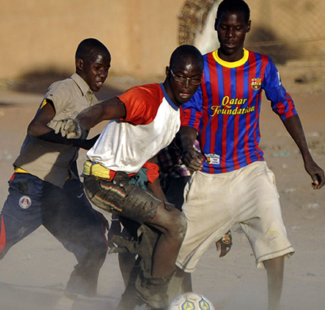

;){kind=link}
“Stop... Stop... You don't listen me?”... Y la pistola apuntó al auto. Era las 8 de la noche en Johannesburgo, Sudáfrica y el taxista ni siquiera se sorprendió. ¿En qué momento se vuelve cotidiano que te apunten con una arma de fuego? Un policía tenía encañonado al conductor desde afuera y uno más se acercaba a la ventanilla. “Where do you go?”...
El chofer le dio la dirección y lo dejó avanzar mientras a lado otro policía –porque eran al menos unos 10- sometía a un negro robusto con la cabeza pegada al cofre de un coche de los años setenta. Es el Mundial del 2010 y en toda África los retenes son tan cotidianos como perder la vida si no cooperas.
Es difícil ser libre, en realidad éste es el continente que más tarde ha encontrado la independencia, los últimos movimientos sucedieron hace no más de 40 años y el futbol - la pasión más grande de la región- es uno de los motivos predilectos para reafirmar gobiernos, desatar guerras o justificar enfrentamientos.
El chofer le dio la dirección y lo dejó avanzar mientras a lado otro policía –porque eran al menos unos 10- sometía a un negro robusto con la cabeza pegada al cofre de un coche de los años setenta. Es el Mundial del 2010 y en toda África los retenes son tan cotidianos como perder la vida si no cooperas.
Es difícil ser libre, en realidad éste es el continente que más tarde ha encontrado la independencia, los últimos movimientos sucedieron hace no más de 40 años y el futbol - la pasión más grande de la región- es uno de los motivos predilectos para reafirmar gobiernos, desatar guerras o justificar enfrentamientos.


Camerún
Paul Biya lleva en el poder desde 1982, ha realizado fraudes electorales como el de 1992.
Costa de Marfil
En 2002 inició una guerra civil, los principales motivos fue la marginación de algunas regiones, la fragilidad democrática, exclusión política.
Nigeria
Enfrentamientos armados que iniciaron en 2003 entre el gobierno y las milicias de las ciudades de Ijaw, Itsereki y Urhobo
Ghana
Forma una de las democracias más sólidas de África y es una de las naciones con mejor futuro económico, pero todavía el 31% del país vive en pobreza extrema
Argelia
Descontento con el régimen de Abdelaziz Buteflika quien tomó el poder desde 1999. La población ha protestado en las plazas y han exigido que el gobierno que elimine el “estado de emergencia” que vive el país desde hace 19 años.
Hace unos días, Libia anunció que no organizará la Copa Africana. Una nación devastada por los 42 años en el poder de Muamar el Gadafi no considera prudente tener un torneo de esa envergadura por “motivos de seguridad”. La pelota había significado durante el mandato del dictador un motivo de orgullo, enalteció a su selección como un símbolo nacionalista e impulsó a su hijo Al-Saadi para que jugará en equipos de la Serie A de Italia, e incluso la familia invirtió más de 23 millones de euros para ser accionista de la Juventus de Turín.
El futbol de esas tierras nunca puede estar en paz porque sus pueblos tampoco lo están. De acuerdo con el estudio “África, el continente maltratado” de Oscar Mateos Martín, al menos del 2005 al 2014 se han presentado 10 movimientos armados, algunos independentistas y otros más como respuesta a la represión, maltrato y pobreza.
El futbol de esas tierras nunca puede estar en paz porque sus pueblos tampoco lo están. De acuerdo con el estudio “África, el continente maltratado” de Oscar Mateos Martín, al menos del 2005 al 2014 se han presentado 10 movimientos armados, algunos independentistas y otros más como respuesta a la represión, maltrato y pobreza.
Uno de los hechos más relevantes ha sido la Primavera Árabe, movimiento social que en algunos sitios se ha convertido en militar, que busca mayor libertad, igualdad y mejores condiciones sociales. El precio ha sido muy alto, más de 153,000 muertes del 2011 a la fecha, incluyendo la tragedia de Port Saíd en Egipto, en la que al término de un partido de la liga local se enfrentaron aficionados de los clubes Al Ahly y Al Masry –opuestos ideológicamente-, los primeros estaban de acuerdo con derrocar al presidente Mubarak y los segundos lo defendían. El saldo final fue de 74 muertos y más de 1,000 heridos. El balón en aquella nación dejó de rodar un año y 10 meses.
En la Copa Africana celebrada en Angola, en 2010, la selección de Togo fue atacada por el grupo separatista Frente para la Liberación del Enclave de Cabinda. Tres personas murieron tras el tiroteo y el equipo decidió abandonar el torneo. ¿La respuesta?, Togo fue suspendido por la Confederación Africana de Futbol de dos ediciones del campeonato por abandono y el certamen se realizó con “normalidad”. El ministro de Deportes de Angola, Goncalves Muandumba, aseguró en aquel momento: "Vamos a tener todas las condiciones necesarias para el éxito, tranquilidad y seguridad de las personas y sus pertenencias”. El futbol por encima de la vida.
Por eso no es de extrañarse que en Sudáfrica un policía encañone para preguntar a dónde te diriges, y es posible que si no frenas en el momento justo, pierdas la vida.
En la Copa Africana celebrada en Angola, en 2010, la selección de Togo fue atacada por el grupo separatista Frente para la Liberación del Enclave de Cabinda. Tres personas murieron tras el tiroteo y el equipo decidió abandonar el torneo. ¿La respuesta?, Togo fue suspendido por la Confederación Africana de Futbol de dos ediciones del campeonato por abandono y el certamen se realizó con “normalidad”. El ministro de Deportes de Angola, Goncalves Muandumba, aseguró en aquel momento: "Vamos a tener todas las condiciones necesarias para el éxito, tranquilidad y seguridad de las personas y sus pertenencias”. El futbol por encima de la vida.
Por eso no es de extrañarse que en Sudáfrica un policía encañone para preguntar a dónde te diriges, y es posible que si no frenas en el momento justo, pierdas la vida.
Un hombre trajeado con un Hugo Boss da indicaciones con mucha dedicación a uno de los jugadores de Argelia. Detrás, la poderosa Alemania preocupada por lo que por aquel momento ya vivía. Tiempos extras. Brasil, Mundial 2014 y lo que era un trámite se convirtió un gasto de energía no presupuestado para los europeos hoy campeones del mundo.
La selección que clasificó por primera vez a una segunda ronda de un Mundial fue un gran pretexto para la propaganda política. En Argel –capital del país- se colgaron pantallas gigantes, se extendían banderas de Sahara Occidental y Palestina, y Buteflika siempre hablaba de “unión nacional”. Incluso, el dictador pidió públicamente al técnico Vahid que se quedará en el puesto, pero él se fue.
Los gobiernos saben del impacto del futbol y por eso han decidido intervenir en muchas ocasiones. Por ejemplo, Túnez y Nigeria han recibido la amenaza de FIFA recientemente de que serán suspendidos porque sus autoridades gubernamentales han tenido inherencia directa. Un periodista de la revista France Football le preguntó a Roger Milla que cuál había sido el mejor momento de aquel Mundial de Italia en 1990. El camerunés le respondió que el más placentero fue cuando el presidente de su país, Paul Biya, estrechó la mano de muchos mandatarios de otras naciones justo el día en que los Leones Indomables había derrotado al campeón Argentina en la inauguración de la copa.

El encorbatado de plata se llama Vahid Halilhodžić, es bosnio y encaminó a Argelia a su gesta futbolística más gloriosa: intentar vencer a Alemania. Por aquel momento el más feliz de toda la nación era Abdelaziz Buteflika. Esos meses de junio y julio fueron un bálsamo para él. Hacía tres años que el pueblo le exigía dejar el poder, hubo inmolaciones y el jefe de estado prometió que pronto terminaría el “estado de emergencia” que había proclamado hace 19 años.
La selección que clasificó por primera vez a una segunda ronda de un Mundial fue un gran pretexto para la propaganda política. En Argel –capital del país- se colgaron pantallas gigantes, se extendían banderas de Sahara Occidental y Palestina, y Buteflika siempre hablaba de “unión nacional”. Incluso, el dictador pidió públicamente al técnico Vahid que se quedará en el puesto, pero él se fue.
Los gobiernos saben del impacto del futbol y por eso han decidido intervenir en muchas ocasiones. Por ejemplo, Túnez y Nigeria han recibido la amenaza de FIFA recientemente de que serán suspendidos porque sus autoridades gubernamentales han tenido inherencia directa. Un periodista de la revista France Football le preguntó a Roger Milla que cuál había sido el mejor momento de aquel Mundial de Italia en 1990. El camerunés le respondió que el más placentero fue cuando el presidente de su país, Paul Biya, estrechó la mano de muchos mandatarios de otras naciones justo el día en que los Leones Indomables había derrotado al campeón Argentina en la inauguración de la copa.
Biya ha gobernado Camerún desde 1982, sorteado varias crisis que han puesto a debate su gobierno como el fraude electoral que perpetró en 1992, así como la controversia de ser uno de los 10 políticos más ricos del planeta cuando más de la mitad de su pueblo vive en pobreza extrema. Simon Kuper, autor del libro “El futbol contra el enemigo” afirma que en el estadio nacional de la capital Yaundé hay un enorme póster del dictador en las oficinas del inmueble, el futbol lo dirige Biya porque sabe la importancia que tiene para el país.
Paul también fue el responsable de que Roger Milla, a sus 42 años y tras el éxito de Italia 90, jugara en la Copa de Estados Unidos 94 y recientemente llamó al presidente de la Federación camerunesa para solicitarle reducir (o quizás exigir) el castigo al que había sido objeto Samuel por boicotear un partido amistoso ante Argelia.
África no está en paz, en todo el continente los problemas se resuelven con guerras civiles y en muchos de estos sitios el futbol resulta una camino para detonarlas, agravarlas o apaciguarlas. También es verdad que uno se puede acostumbrar a casi todo, después de varios días en Sudáfrica uno sabe que en cualquier momento le puede tocar un retén, le apuntarán con una pistola, le exigirán abrir su equipaje y le dejarán ir si coopera.
Paul también fue el responsable de que Roger Milla, a sus 42 años y tras el éxito de Italia 90, jugara en la Copa de Estados Unidos 94 y recientemente llamó al presidente de la Federación camerunesa para solicitarle reducir (o quizás exigir) el castigo al que había sido objeto Samuel por boicotear un partido amistoso ante Argelia.
África no está en paz, en todo el continente los problemas se resuelven con guerras civiles y en muchos de estos sitios el futbol resulta una camino para detonarlas, agravarlas o apaciguarlas. También es verdad que uno se puede acostumbrar a casi todo, después de varios días en Sudáfrica uno sabe que en cualquier momento le puede tocar un retén, le apuntarán con una pistola, le exigirán abrir su equipaje y le dejarán ir si coopera.